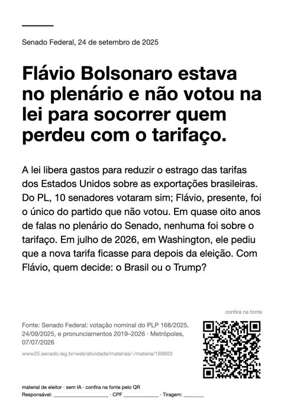
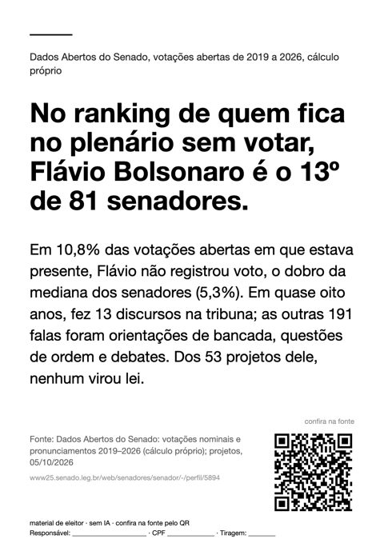
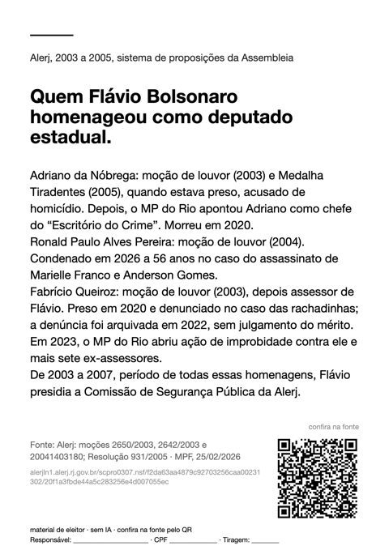
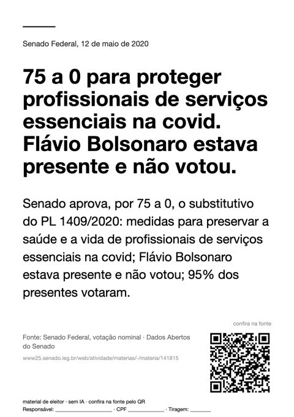
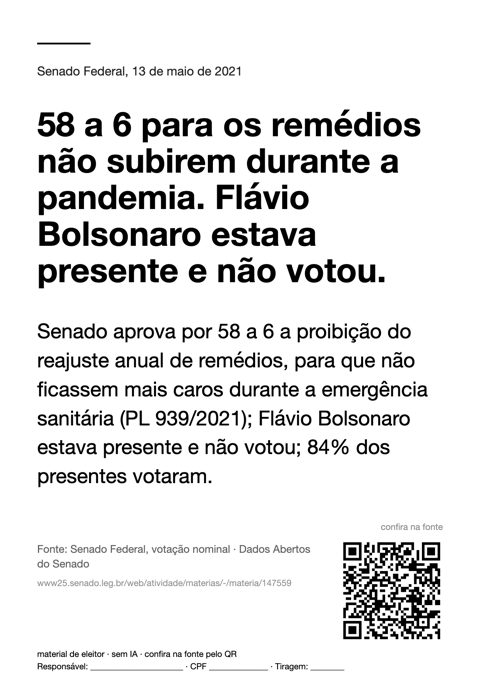
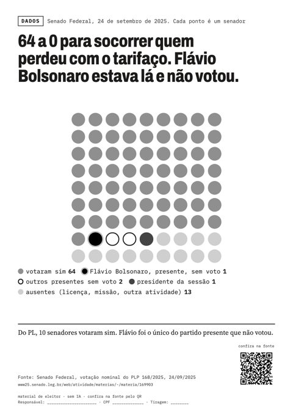
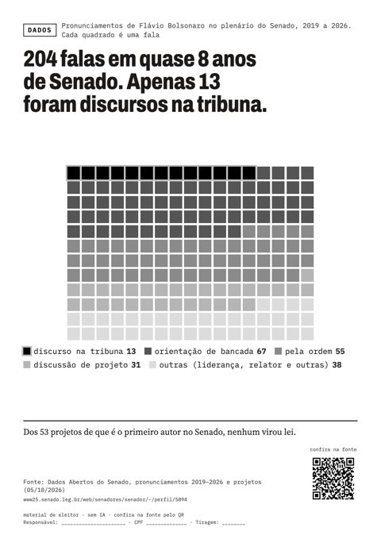

Assuntos pouco falados
Fatos sobre Flávio Bolsonaro que saíram do cruzamento de registros oficiais (votações e falas no Senado, agenda do governo, documentos da Alerj) e que apareceram pouco na imprensa e nas redes. Cada peça traz a fonte no QR.
São para o feed de quem já decidiu e para responder a quem pergunta. Para grupo de família, prefira o kit básico. Toque em Copiar texto para mandar a explicação e o link da fonte junto com a imagem.
Fatos

Senado Federal: pronunciamento e votação nominal da PEC 32/2022, 07/12/2022 · plano de governo registrado no TSE · abrir a fonte
Baixar a versão para status (vertical)
Senado Federal: votação nominal do PLP 168/2025, 24/09/2025, e pronunciamentos 2019–2026 · Metrópoles, 07/07/2026 · abrir a fonte
Baixar a versão para status (vertical)
CNN Brasil, 19/05/2026 · Dados Abertos do Senado, pronunciamentos de Flávio Bolsonaro 2019–2026 · abrir a fonte
Baixar a versão para status (vertical)
Dados Abertos do Senado: votações nominais e pronunciamentos 2019–2026 (cálculo próprio); projetos, 05/10/2026 · abrir a fonte
Baixar a versão para status (vertical)
Estadão, 21/09/2026 (via Terra) · MPF, 25/02/2026 · e-Agendas da CGU, registros 277975, 286059, 308459 e 508801 · abrir a fonte
Baixar a versão para status (vertical)
Alerj: moções 2650/2003, 2642/2003 e 20041403180; Resolução 931/2005 · MPF, 25/02/2026 · abrir a fonte
Baixar a versão para status (vertical)
Dados Abertos do Senado, textos dos pronunciamentos 2019–2026 (contagem própria) · plano de governo registrado no TSE · abrir a fonte
Baixar a versão para status (vertical)
Senado Federal, votação nominal · Dados Abertos do Senado · abrir a fonte
Baixar a versão para status (vertical)
Senado Federal, votação nominal · Dados Abertos do Senado · abrir a fonte
Baixar a versão para status (vertical)
Senado Federal, votação nominal · Dados Abertos do Senado · abrir a fonte
Baixar a versão para status (vertical)


Em gráfico

Dados Abertos do Senado, textos dos pronunciamentos 2019–2026 (contagem própria) · plano de governo registrado no TSE · abrir a fonte
Baixar a versão para status (vertical)
Dados Abertos do Senado, votações nominais abertas 2019–2026 (cálculo próprio) · abrir a fonte
Baixar a versão para status (vertical)
Senado Federal, votação nominal do PLP 168/2025, 24/09/2025 · abrir a fonte
Baixar a versão para status (vertical)
Dados Abertos do Senado, pronunciamentos 2019–2026 e projetos (05/10/2026) · abrir a fonte
Baixar a versão para status (vertical)


Para imprimir
Lambe só em parede ou muro particular, com autorização do dono, até meio metro quadrado. Nada no dia da eleição.
Lambes avulsos, um por folha A4















Material de eleitor. Cada peça traz a fonte do fato. Feito com código, sem IA.